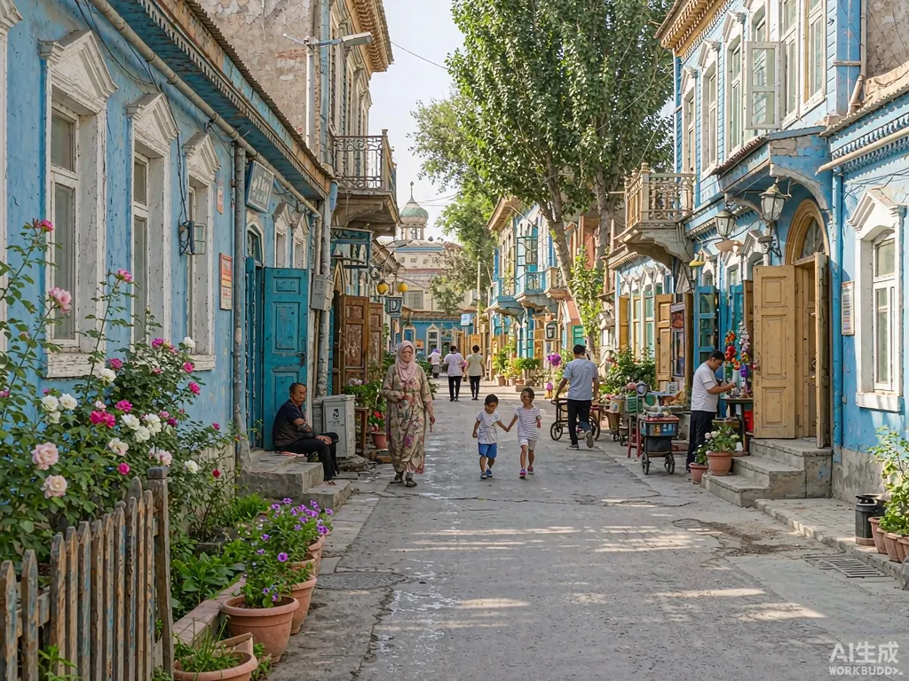

City walk
City walk
Don't just treat it as a stopover — its street warmth needs slow walking
Urumqi compresses all of Xinjiang into a day's walk; it deserves your own two feet.
Many treat Urumqi as a transit stop to Northern Xinjiang and leave after one night. But this "geographic centre of Asia" packs the whole of Xinjiang into a walkable day — it is the regional capital and transport hub, and a core node of the Silk Road Economic Belt; more than forty ethnic groups, Uyghur, Kazakh, Hui, Han and Russian among them, give the city a mixed palate and streetscape. In Mongolian, "Urumqi" means "beautiful pasture" — walking here, you see how fitting the name is.
The route at a glance
- 10:00–12:00 International Grand Bazaar
- 12:30–14:00 Linguan Lane (lunch)
- 14:30–16:00 Jinquan Mall + old teahouse
- 16:30–18:30 Xinjiang Museum
- 19:00–21:00 Red Hill Park (sunset)
- 21:00–23:00 Hetian Erjie Night Market (dinner)
This is a Urumqi one-day City Walk for foodies and bazaar lovers: from the bazaar's calls to the charcoal aroma of Linguan Lane, to Red Hill Tower framing Bogda Peak in gold, and finally the locals' late-night canteen. The new "Route 2 City Sightseeing Line" — a retro red-and-white bus — links the bazaar, museum, Red Hill and Hetian Street; ride it if you'd rather not walk.
International Grand Bazaar (10:00–12:00)
Opened in 2003, the International Grand Bazaar is the world's largest castle-style bazaar — 100,000 m², over 3,300 shops, with an 80-metre Silk Road viewing tower as its landmark. But don't treat it only as a mall — it is a living Silk Road museum. From the tower top you get a 360° view of the city with distant snow peaks; the Naan Culture Hall displays a one-metre giant naan and over twenty creative flavours like rose jam; the folk village stages daily rawap and Uyghur dance. The 2025 "Jianglai Cheng" phase-two pedestrian street is a cultural-commercial complex with dozens of intangible-heritage shows daily — shop, then check in for your flight right there.
Linguan Lane (12:30–14:00 lunch)
A 370-metre old lane on Xinhua South Road, a hidden food street for locals. A "Taste Linguan Lane" installation marks the entrance, but the flavours are the old ones — colourful baked-bun shops as backdrop, afternoon sun slanting in like a film. Baierkaiti's meat naan sells out fast; Kashgar Yibazhua baked buns burst with hot lamb juice; hand-kneaded mixed noodles glisten with tomato-chilli sauce. More real than the bazaar: no tourist show, just neighbours and charcoal.
Jinquan Mall + old teahouse (14:30–16:00)
The "Jinquan Mall" on the bazaar's third floor is the core for intangible-heritage crafts and dried goods, with a wider selection. Find an old teahouse nearby, order brick tea with naan and watch the street idle — that is a Urumqi afternoon. For more, the Luyuan Street tea-culture district has gathered tea merchants since 1999, now over 120 households, a block of tea display, performances and tasting, not far from the bazaar.
Xinjiang Museum (16:30–18:30)
To understand Xinjiang, start at the museum. The provincial museum on Northwest Road is among China's first batch of top-grade museums. The treasure "Five Stars Rise in the East" Han brocade armband and the Loulan beauty mummies are here; the phase-two "Central Dynasties' Governance of Xinjiang" exhibit shows over a thousand artifacts, hundreds shown for the first time. Thursday nights even host a "Museum Wonderful Night" — reserve days ahead online.
Red Hill Park (19:00–21:00 sunset)
The city's "green heart", an AAAA site. From the Far-Viewing Tower, Red Hill Tower and Bogda Peak frame together, the summer snow cap gilded; just after dusk at the West Bridge the streetlights' reflection on the river is most photogenic. The Red Hill Tower lets you ring a bell for luck. Summer sunset is about 19:00–20:30; climb after 18:00 to avoid midday sun.
Hetian Erjie Night Market (21:00–23:00 dinner)
Hetian Erjie in Saybagh District is the locals' smoky night market, still buzzing past midnight. Yusufu's "Big Eye" lamb skewers are full of charcoal fire; Zhengfei Fresh Milk's cheese bun with honey-fermented kvass is rich. Not a tourist market — Urumqi's late-night canteen, eat till full.
Locals know: Urumqi runs two hours behind Beijing time — peaks are at breakfast and dinner, so don't rush mornings; in the city, pick shops busy with locals. The new "Route 2 City Sightseeing Line" retro bus stops at "8th Floor" — exactly the "Route 2 bus parked at the 8th floor" in Dao Lang's song; the 8th Floor is the Kunlun Hotel, built 1959 and then the city's tallest. It links the bazaar, children's park, museum, Red Hill and Hetian Street — lazy-friendly to the end.
Restaurants & cafés to try
Urumqi is the centre of Xinjiang's food universe, from street baked buns to palace-style pilaf. The picks below are old shops locals grew up with, very low risk of a bad meal; cafés range from ethnic specialities to literary neighbourhood spots. Hours may change — confirm before you go.
Where locals eat
- Haierbage Yidian Tea Restaurant (Tuanjie Rd): grand decor, refined dishes, the place to eat a full Xinjiang banquet at once — nine-bowls-three-rows, spicy lamb hooves, hand-pilaf, lamb skewers, all top notch.
- Hetian Rose Pilaf (main shop): distinct grains, rich lamb-fat aroma, big soft leg-of-lamb pilaf — the closest to the local old taste; refillable rice.
- Pang Laohan (Beijing Rd): since 1995, famous for pepper-ma chicken — tender meat, perfect numbing-spice; the braised aubergine also goes with rice.
- Baierkaiti Special Meat Naan: fresh out of the oven, crisp outside, meaty inside, as big as a basin; best hot. At Xinhua South Rd and Linguan Lane crossing — buy one and nibble while walking.
Cafés & drinks
- Liwand Coffee (Xinhua South Rd): near the bazaar, a local gathering spot with ornate Turkish-style decor; coffee plus Xinjiang sweets and light food.
- Old Town Corner Café: under pottery, old wood doors and a grape arbour, a "Kashgar coffee" with saffron and Hotan rose — bitter wrapped in fragrance, a flavour found nowhere else.
- Monolog Of Beans: Luntai apricot americano, sheep-milk coffee, Turpan grape pour-over — Xinjiang flowers and fruit turned into coffee; small shop, serious beans.
Practical information
- Getting there: Metro Line 1, Erdaoqiao station to the bazaar; taxi in town; Route 2 sightseeing bus; airport rail extended.
- Best season: May wild apricot blossom, June Dushanzi–Kuqa Highway opens, Sep–Oct autumn colours; summer is cool at Nanshan.
- Suggested stay: one day City Walk (10:00–23:00); nearby Tianchi and Nanshan need a separate day.
- Dress & sun: strong UV — SPF50+, sunglasses, hat; big day-night temperature swing, bring a jacket; modest dress and shoe removal at mosques.
- Local notes: two-hour time lag, don't rush mornings; no pork or alcohol in halal restaurants; ask before photographing; few restaurant choices in scenic areas, head to residential blocks.
Want to walk Urumqi slowly? Our private car and guide plan it: from the bazaar to Tianchi and Nanshan, your route, no rushing, no shop stops, local driver, stop and shoot anywhere.
Keep reading
Further reading
Make sense of Northern Xinjiang, or keep walking the Silk Road.
 City walk
City walk Index
Index